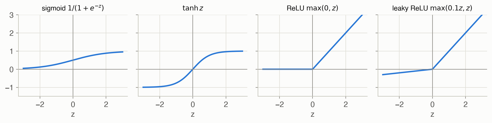
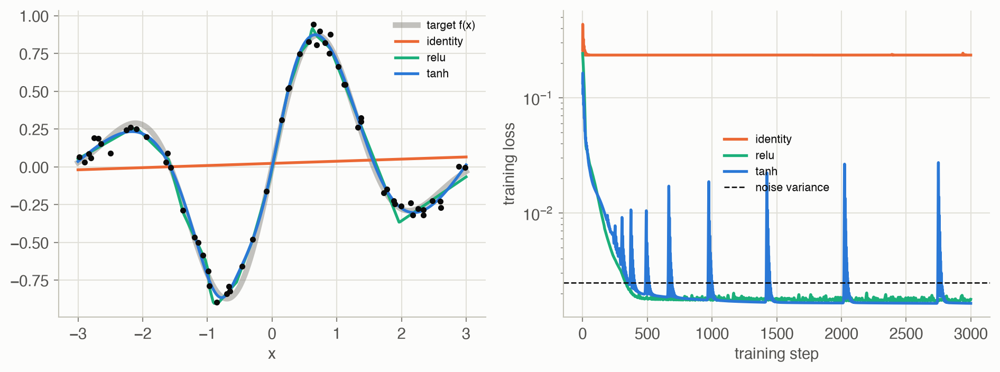
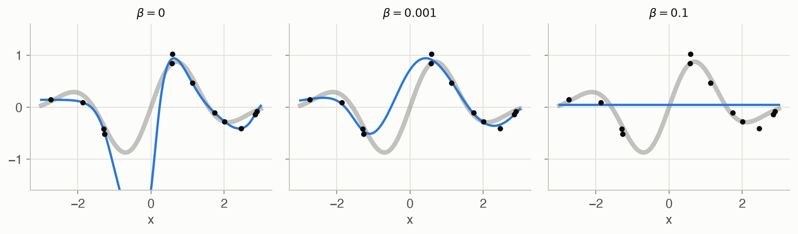
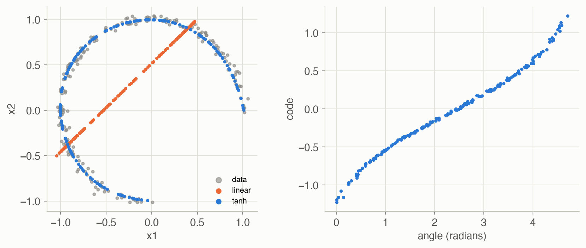

D · Neural Representations
Appendices
A neural network is a flexible function with many adjustable parameters. Fed enough examples, gradient descent tunes the parameters until the function matches the data. On this site, neural networks are one option wherever a chapter needs a function it can’t write down: a value function (Chapter 8), a policy (Chapters 10–13), a critic (Chapter 13) or a discriminator (Chapter 18). This appendix follows ADM Appendix D. All code runs in plain NumPy, with the gradient computed by hand, so every step is visible.
At a glance
| Architecture | Idea | Good for | Where it fits |
|---|---|---|---|
| Feedforward | layers of affine maps and nonlinearities | any fixed-size input and output | value functions (Ch 8, which fits one), policies and critics (Ch 10–13) |
| Convolutional | the same small filter slides across the input | images, signals, grids | value functions or policies for image-like states |
| Recurrent | a hidden state carried from step to step | sequences, histories | summarizing observation histories in POMDPs (Ch 19–22) |
| Autoencoder | squeeze the input through a narrow middle, then rebuild it | compression, learned features | learning compact state features |
| Adversarial | a generator and a discriminator trained against each other | imitating a distribution | GAIL (Ch 18, described there) |
Feedforward networks
A feedforward network, or multilayer perceptron, is a chain of layers. Each layer mixes its inputs linearly and then bends the result with a fixed nonlinear function:
\[ \mathbf{x}' = \phi\big(\mathbf{W}\mathbf{x} + \mathbf{b}\big) \tag{1}\]
In words. Each output unit takes a weighted sum of all inputs, adds a bias, and passes it through an activation function.
Term by term.
- \(\mathbf{x}\): the layer’s input, a vector of length \(m\); \(\mathbf{x}'\): its output, of length \(n\).
- \(\mathbf{W}\): an \(n \times m\) weight matrix; row \(i\) holds the weights of output unit \(i\). \(\mathbf{b}\): a bias vector of length \(n\).
- \(\phi\): the activation function, applied to each element separately (Figure 1).
Why it holds. It is a design choice, and the nonlinearity is essential. Without it, two layers collapse into one: \(\mathbf{W}_2(\mathbf{W}_1\mathbf{x} + \mathbf{b}_1) + \mathbf{b}_2 = (\mathbf{W}_2\mathbf{W}_1)\mathbf{x} + (\mathbf{W}_2\mathbf{b}_1 + \mathbf{b}_2)\), still an affine map, so any depth of linear layers can only draw straight lines. With a nonlinear \(\phi\), a network with one wide enough hidden layer can approximate any continuous function on a bounded region to any accuracy (the universal approximation theorem; Cybenko 1989, Hornik 1991).
The code on this page stores samples as rows, so a layer computes X @ W + b with W of shape \(m \times n\): the transpose of Equation 1, applied to a whole batch at once. Hidden layers apply \(\phi\); the output layer is left linear so it can produce any real number.
When the output must be a probability distribution, for example a stochastic policy over actions, the last layer is followed by a softmax:
\[ \operatorname{softmax}(\mathbf{z})_i = \frac{\exp(z_i)}{\sum_j \exp(z_j)} \tag{2}\]
In words. Exponentiate every score so it is positive, then divide by the total so the results add up to 1.
Term by term.
- \(z_i\): the score (logit) of option \(i\); larger scores get larger probabilities.
- \(\exp\): keeps the order of the scores and makes them positive; a gap of 1 between scores means a ratio of \(e \approx 2.72\) between probabilities.
- The denominator: normalizes the results to sum to 1.
Why it holds. Adding the same constant to every score cancels between numerator and denominator, so only differences between scores matter; the code subtracts the largest score before exponentiating to avoid overflow. Example: scores \((2, 1, -1)\) give probabilities 0.705, 0.259, 0.035.
Figure 2 shows the network used for the examples below, and how information flows in training.
Backpropagation
Training needs the gradient of the loss with respect to every weight. Backpropagation (reverse-mode differentiation) gets all of them in one backward sweep, at about the cost of one extra forward pass:
\[ \frac{\partial \ell}{\partial \mathbf{x}} = \frac{\partial \ell}{\partial \mathbf{x}'}\,\frac{\partial \mathbf{x}'}{\partial \mathbf{x}} \tag{3}\]
In words. The gradient with respect to a layer’s input is the gradient with respect to its output, times how much the output moves when the input moves.
Term by term.
- \(\ell\): the loss, a single number.
- \(\partial \ell / \partial \mathbf{x}'\): arrives from the layer above (from the loss itself, at the top).
- \(\partial \mathbf{x}' / \partial \mathbf{x}\): local to the layer. For Equation 1 it is \(\phi'(\mathbf{W}\mathbf{x} + \mathbf{b})\) times \(\mathbf{W}\), and the weight gradient is the incoming gradient (after \(\phi'\)) times the layer input.
Why it holds. It is the chain rule of calculus, applied once per layer. Going from the output backward means each layer multiplies a gradient vector by its local derivative, so no large Jacobian matrix is ever formed. That is why the backward pass costs about as much as the forward pass, however many parameters there are.
Worked example
Take a network with one hidden ReLU unit: \(\hat{y} = w_2\,\max(0, w_1 x + b_1) + b_2\) with \(w_1 = 0.8\), \(b_1 = -0.2\), \(w_2 = 1.5\), \(b_2 = 0.1\), one sample \(x = 1.5\), \(y = 1\), and loss \(\ell = (\hat{y} - y)^2\).
Forward. \(z = 0.8 \cdot 1.5 - 0.2 =\) 1.00, \(h = \max(0, z) =\) 1.00, \(\hat{y} = 1.5 h + 0.1 =\) 1.60, \(\ell =\) 0.36.
Backward.
- \(\partial\ell/\partial\hat{y} = 2(\hat{y} - y) =\) 1.20. Since \(\hat{y} = w_2 h + b_2\): \(\partial\ell/\partial w_2 =\) 1.20 \(\times h =\) 1.20 and \(\partial\ell/\partial b_2 =\) 1.20.
- Into the hidden unit: \(\partial\ell/\partial h =\) 1.20 \(\times w_2 =\) 1.80. The ReLU is in its active region (\(z > 0\)), so its slope is 1 and \(\partial\ell/\partial z\) is the same.
- Since \(z = w_1 x + b_1\): \(\partial\ell/\partial w_1 =\) 1.80 \(\times x =\) 2.70 and \(\partial\ell/\partial b_1 =\) 1.80.
| Parameter | Backpropagation | Finite difference |
|---|---|---|
| \(w_1\) | 2.700000 | 2.700000 |
| \(b_1\) | 1.800000 | 1.800000 |
| \(w_2\) | 1.200000 | 1.200000 |
| \(b_2\) | 1.200000 | 1.200000 |
Fitting a curve
Figure 3 fits 60 noisy samples of \(f(x) = \sin(2x)\,e^{-x^2/4}\) with three networks of the same 1-16-16-1 shape, trained for 3,000 steps of Adam (a gradient method that scales each parameter’s step by its recent gradient size). Only the activation differs.

The test error on a fine grid, measured against the true \(f\), is 0.209 for the linear network, which can only draw a straight line, against 0.0017 for ReLU and 0.0012 for tanh. Both nonlinear networks settle slightly below the noise variance of 0.0025; driving the training loss much lower would mean fitting the noise itself. The spikes in the tanh curve are Adam steps that overshoot; after step 500 the loss is back below the noise level within about 15 steps each time.
Regularization
A large network fitted to few points can pass through every point, noise included, and swing wildly between them. Weight regularization adds a penalty on large weights to the training loss:
\[ \min_{\theta}\ \frac{1}{\lvert \mathcal{D} \rvert}\sum_{(x, y) \in \mathcal{D}} \big(f_\theta(x) - y\big)^2 + \beta \lVert \mathbf{W} \rVert_2^2 \tag{4}\]
In words. Fit the data, but pay a price for every large weight.
Term by term.
- \(\mathcal{D}\): the training data; \(f_\theta\): the network with parameters \(\theta\).
- \(\lVert \mathbf{W} \rVert_2^2\): the sum of all squared weights (the code leaves biases unpenalized).
- \(\beta \ge 0\): the strength. \(\beta = 0\) is plain fitting; a large \(\beta\) flattens the network toward a constant.
Why it holds. The penalty’s gradient, \(2\beta\mathbf{W}\), pulls every weight toward zero at each step, so a weight survives only if the data keep pushing it. Small weights keep each \(\tanh\) unit near its linear region, which gives smoother functions. In Bayesian terms it is a Gaussian prior on the weights (Appendix B), and the minimizer is the most probable network given the data.

| β | Training error | Test error | Test error per dataset |
|---|---|---|---|
| 0 | 0.0015 | 0.142 | 0.426, 0.344, 0.027, 0.031, 0.029, 0.030, 0.203, 0.044 |
| 0.001 | 0.0031 | 0.048 | 0.112, 0.080, 0.004, 0.011, 0.026, 0.009, 0.130, 0.014 |
| 0.1 | 0.2051 | 0.214 | 0.211, 0.234, 0.209, 0.209, 0.214, 0.220, 0.208, 0.208 |
Without regularization the network drives its training error far below the noise variance of 0.01: it has memorized the noise. A small penalty, \(\beta = 10^{-3}\), gives a lower test error on 8 of the 8 datasets; a large one, \(\beta = 0.1\), underfits every dataset.
Other architectures
Convolutional networks. Instead of connecting every input to every unit, a convolutional layer slides one small filter along the input, computing \(y_i = \sum_j w_j\,x_{i+j}\) at each position. The same few weights are reused everywhere, so a pattern is detected wherever it appears. With the filter \((-1, 0, 1)\), the signal 0 0 0 1 1 1 1 0 0 becomes 0 1 1 0 0 −1 −1: the filter responds \(+1\) around the step up, \(-1\) around the step down, and 0 on flat stretches. Stacks of such layers, learned from data, find edges, then shapes, then objects in images.
Recurrent networks. A recurrent network reads a sequence one element at a time and carries a hidden state forward, \(\mathbf{h}_t = \phi(\mathbf{W}\mathbf{h}_{t-1} + \mathbf{U}\mathbf{x}_t + \mathbf{b})\), with the same weights at every step. The hidden state is a learned summary of everything seen so far, which makes recurrent networks a natural way to turn a POMDP’s action-observation history into something a policy can use, in place of an exact belief (Chapter 19). Training unrolls the network over time and backpropagates through the unrolled chain; gradients that shrink or grow at each step make long memories hard to learn, which gated designs such as the LSTM (Hochreiter and Schmidhuber 1997) address.
Autoencoders. An autoencoder is trained to reproduce its input through a narrow middle layer, the code. Because the input must pass through the bottleneck, the code has to capture what matters about it. Figure 5 squeezes 200 noisy points on three quarters of a circle through a single number. A linear autoencoder can only project onto a line (it recovers principal component analysis), with reconstruction error 0.137. A 2-32-1-32-2 tanh network bends its code around the arc, with error 0.0006, and its code is almost a monotone function of the angle (rank correlation 0.999): it has discovered that the data are one-dimensional.

Adversarial networks. A generative adversarial network (Goodfellow et al. 2014) trains two networks against each other. A generator turns random noise into samples; a discriminator tries to tell those samples from real data. The generator improves by fooling the discriminator, and at the balance point its samples are indistinguishable from the data. Chapter 18’s GAIL uses the same game with a policy as the generator: the discriminator tries to tell the policy’s state-action pairs from an expert’s, and the policy is rewarded for fooling it.
References. G. Cybenko, “Approximation by superpositions of a sigmoidal function,” Mathematics of Control, Signals and Systems 2, 1989. K. Hornik, “Approximation capabilities of multilayer feedforward networks,” Neural Networks 4, 1991. S. Hochreiter and J. Schmidhuber, “Long short-term memory,” Neural Computation 9, 1997. I. Goodfellow et al., “Generative adversarial nets,” NeurIPS, 2014.
Code
The forward pass caches each layer’s input and pre-activation; the backward pass walks the layers in reverse, applying Equation 3. Chapter 8’s NeuralNetValue is the one-hidden-layer case of the same computation.
def forward(params, X, act="tanh"):
"""Returns the output and a cache of (layer input, pre-activation)
per layer, which the backward pass needs."""
phi = ACTIVATIONS[act][0]
A, cache = X, []
for k, (W, b) in enumerate(params):
Z = A @ W + b # (n, d_in) @ (d_in, d_out)
cache.append((A, Z))
A = Z if k == len(params) - 1 else phi(Z) # linear output layer
return A, cache
def backward(params, cache, dA, act="tanh") -> list:
"""Chain rule from the output back: dA is dLoss/dOutput, (n, d_out).
Returns [(dW, db)] matching params."""
dphi = ACTIVATIONS[act][1]
grads = [None] * len(params)
for k in reversed(range(len(params))):
A_prev, Z = cache[k]
# Through the activation (skipped at the linear output layer)
dZ = dA if k == len(params) - 1 else dA * dphi(Z)
W = params[k][0]
# Z = A_prev @ W + b: each weight's gradient sums over the batch
grads[k] = (A_prev.T @ dZ, dZ.sum(axis=0))
dA = dZ @ W.T # hand the gradient to layer k - 1
return grads
def mse_loss(params, X, Y, act="tanh", beta=0.0):
"""Mean squared error plus beta * (sum of squared weights), and its
gradient. Biases are not penalized."""
Yhat, cache = forward(params, X, act)
err = Yhat - Y
loss = (err ** 2).sum() / len(X) + beta * sum((W ** 2).sum()
for W, _ in params)
grads = backward(params, cache, 2 * err / len(X), act)
grads = [(dW + 2 * beta * W, db) for (dW, db), (W, _) in
zip(grads, params)]
return loss, gradsusing Random
# Layers are (W, b) with W of size (d_out, d_in): Julia keeps one sample
# per COLUMN, so a layer computes W * X .+ b (the transpose of the Python
# layout, which is natural for Julia's column-major arrays).
function forward(params, X)
A, cache = X, []
for (k, (W, b)) in enumerate(params)
Z = W * A .+ b
push!(cache, (A, Z))
A = k == length(params) ? Z : tanh.(Z) # linear output layer
end
return A, cache
end
function mse_loss(params, X, Y)
Yhat, cache = forward(params, X)
n = size(X, 2)
dA = 2 .* (Yhat .- Y) ./ n
grads = Vector{Any}(undef, length(params))
for k in length(params):-1:1
A_prev, Z = cache[k]
dZ = k == length(params) ? dA : dA .* (1 .- tanh.(Z) .^ 2)
W = params[k][1]
# sum over the batch (dims = 2), then drop that axis
grads[k] = (dZ * A_prev', vec(sum(dZ; dims = 2)))
dA = W' * dZ
end
return sum(abs2, Yhat .- Y) / n, grads
end
function demo()
rng = MersenneTwister(0)
f(x) = sin(2x) * exp(-x^2 / 4)
X = 6 .* rand(rng, 1, 60) .- 3 # 1 × 60: one sample per column
Y = f.(X)
params = [(randn(rng, 16, 1), zeros(16)), (randn(rng, 16, 16) ./ 4, zeros(16)),
(randn(rng, 1, 16) ./ 4, zeros(1))]
# Finite-difference check of one weight
loss0, grads = mse_loss(params, X, Y)
h = 1e-6
params[2][1][3, 5] += h; up = mse_loss(params, X, Y)[1]
params[2][1][3, 5] -= 2h; down = mse_loss(params, X, Y)[1]
params[2][1][3, 5] += h
@assert isapprox((up - down) / 2h, grads[2][1][3, 5]; atol = 1e-6)
# Plain gradient descent (Python's train() uses Adam)
for _ in 1:3000
_, grads = mse_loss(params, X, Y)
for ((W, b), (dW, db)) in zip(params, grads)
W .-= 0.05 .* dW; b .-= 0.05 .* db
end
end
loss = mse_loss(params, X, Y)[1]
println("loss ", round(loss0; digits = 4), " -> ", round(loss; digits = 4))
@assert loss < loss0 / 5
end
demo()